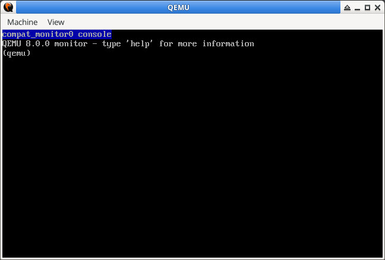

參考資訊：
https://gitlab.com/qemu-project/qemu
QEMU v8.0.0
$ cd $ git clone https://gitlab.com/qemu-project/qemu -b v8.0.0 --depth=1
configs/devices/arm-softmmu/default.mak
CONFIG_F1C100S=y
target/arm/cpu_tcg.c
static void f1c100s_initfn(Object *obj)
{
ARMCPU *cpu = ARM_CPU(obj);
cpu->dtb_compatible = "arm,arm926";
set_feature(&cpu->env, ARM_FEATURE_V5);
set_feature(&cpu->env, ARM_FEATURE_DUMMY_C15_REGS);
set_feature(&cpu->env, ARM_FEATURE_CACHE_TEST_CLEAN);
cpu->midr = 0x41069265;
cpu->reset_fpsid = 0x41011090;
cpu->ctr = 0x1dd20d2;
cpu->reset_sctlr = 0x00090078;
}
static const ARMCPUInfo arm_tcg_cpus[] = {
...
{ .name = "f1c100s", .initfn = f1c100s_initfn },
};
hw/arm/f1c100s.c
#include "qemu/osdep.h"
#include "qemu/log.h"
#include "qemu/module.h"
#include "qemu/datadir.h"
#include "qemu/units.h"
#include "qemu/f1c100s_log.h"
#include "hw/sysbus.h"
#include "hw/arm/boot.h"
#include "hw/ssi/ssi.h"
#include "hw/misc/unimp.h"
#include "hw/boards.h"
#include "hw/usb/hcd-ohci.h"
#include "hw/loader.h"
#include "hw/firmware/smbios.h"
#include "qapi/error.h"
#include "sysemu/sysemu.h"
#include "sysemu/runstate.h"
#include "target/arm/cpu.h"
#define TYPE_F1C100S "f1c100s"
OBJECT_DECLARE_SIMPLE_TYPE(f1c100s_soc_state, F1C100S)
int f1c100s_debug_level = TRACE_LEVEL;
struct f1c100s_soc_state {
};
static void f1c100s_soc_realize(DeviceState *dev, Error **errp)
{
trace("call %s()\n", __func__);
}
static void f1c100s_soc_instance_init(Object *obj)
{
trace("call %s()\n", __func__);
}
static void f1c100s_soc_class_init(ObjectClass *oc, void *data)
{
DeviceClass *dc = DEVICE_CLASS(oc);
trace("call %s()\n", __func__);
dc->realize = f1c100s_soc_realize;
}
static const TypeInfo f1c100s_soc_type_info = {
.name = "f1c100s",
.parent = TYPE_DEVICE,
.instance_size = sizeof(f1c100s_soc_state),
.instance_init = f1c100s_soc_instance_init,
.class_init = f1c100s_soc_class_init,
};
static void f1c100s_soc_register_types(void)
{
trace("call %s()\n", __func__);
type_register_static(&f1c100s_soc_type_info);
}
type_init(f1c100s_soc_register_types)
static void f1c100s_soc_board_init(MachineState *machine)
{
trace("call %s()\n", __func__);
};
static void f1c100s_soc_init(MachineClass *mc)
{
trace("call %s()\n", __func__);
mc->desc = "Allwinner F1C100S (ARM926EJ-S)";
mc->init = f1c100s_soc_board_init;
mc->min_cpus = 1;
mc->max_cpus = 1;
mc->default_cpus = 1;
mc->default_cpu_type = ARM_CPU_TYPE_NAME("f1c100s");
mc->default_ram_size = 32 * MiB;
mc->default_ram_id = "f1c100s.ram";
};
DEFINE_MACHINE("f1c100s", f1c100s_soc_init)
hw/arm/meson.build
arm_ss.add(when: 'CONFIG_F1C100S', if_true: files('f1c100s.c'))
hw/arm/Kconfig
config F1C100S
bool
include/qemu/aw_log.h
#ifndef __AW_LOG_H__
#define __AW_LOG_H__
extern int f1c100s_debug_level;
#define trace(...) do { \
if (f1c100s_debug_level >= TRACE_LEVEL) { \
printf("[TRACE] "); \
printf(__VA_ARGS__); \
} \
} while(0);
#define debug(...) do { \
if (f1c100s_debug_level >= DEBUG_LEVEL) { \
printf("[DEBUG] "); \
printf(__VA_ARGS__); \
} \
} while(0);
#define error(...) do { \
if (f1c100s_debug_level >= ERROR_LEVEL) { \
printf("[ERROR] "); \
printf(__VA_ARGS__); \
} \
} while(0);
#define fatal(...) do { \
printf("[FATAL] "); \
printf(__VA_ARGS__); \
exit(-1); \
} while(0);
#endif
編譯、測試
$ ./configure --target-list=arm-softmmu
$ make -j4
$ sudo make install
$ ./build/qemu-system-arm -cpu help
Available CPUs:
f1c100s
$ ./build/qemu-system-arm -M help
f1c100s Allwinner F1C100S (ARM926EJ-S)
$ ./build/qemu-system-arm -M f1c100s
[TRACE] call f1c100s_soc_register_types()
[TRACE] call f1c100s_soc_init()
[TRACE] call f1c100s_soc_class_init()
[TRACE] call f1c100s_soc_board_init()
